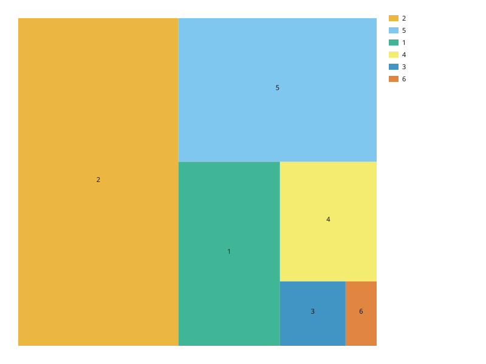
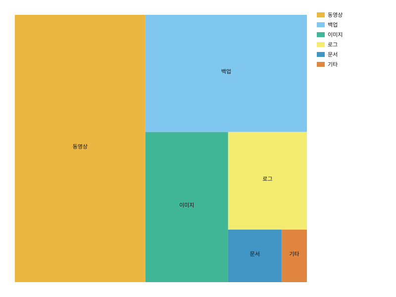
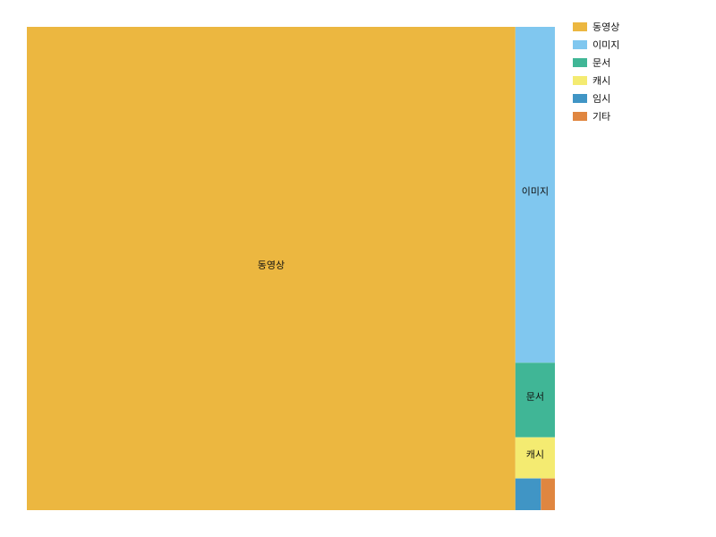

값을 면적에 비례하는 타일로 캔버스를 채운다. squarified 배치(Bruls 2000)를 쓰고 단일 레벨만 다룬다.
import svgplot as sp
STORAGE = {
"종류": ["이미지", "동영상", "문서", "로그", "백업", "기타"],
"GB": [420.0, 1180.0, 95.0, 260.0, 640.0, 45.0],
}
sp.treemap(STORAGE, values="GB")
sp.treemap(STORAGE, values="GB", labels="종류")
LOPSIDED = {
"종류": ["동영상", "이미지", "문서", "캐시", "임시", "기타"],
"GB": [3200.0, 180.0, 40.0, 22.0, 11.0, 6.0],
}
sp.treemap(LOPSIDED, values="GB", labels="종류")